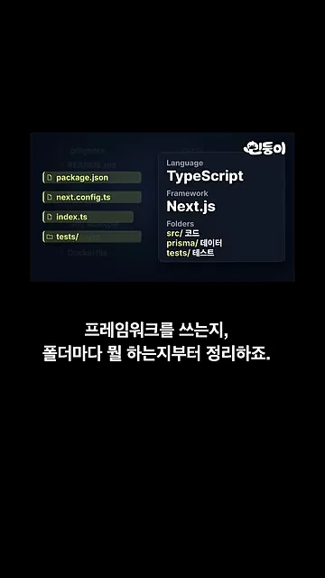
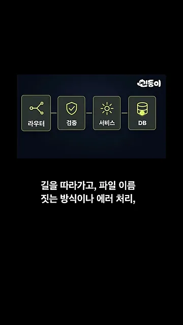
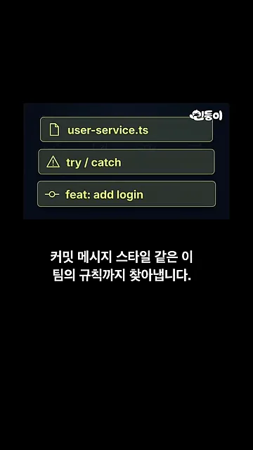
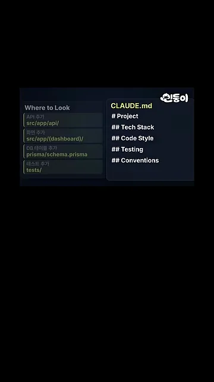
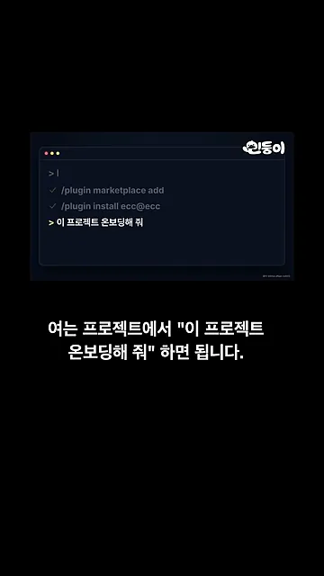
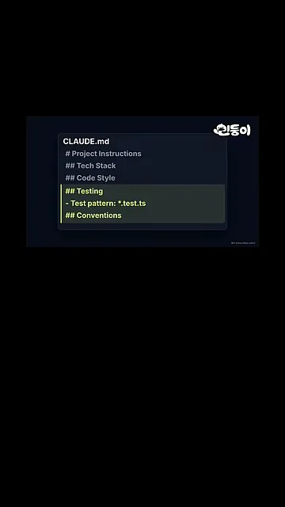

어떤 스킬인가요
남이 만든 프로젝트를 처음 열면 어디서부터 읽어야 할지 막막해요. 이 영상은 그때 쓰는 Claude Code 스킬 하나를 1분 만에 보여 줘요. 이름은 codebase-onboarding이고, 처음 여는 프로젝트를 2분 안에 훑어볼 수 있는 안내서를 만들어 줘요.
이 스킬은 깃허브 별 28만 개를 받은 스킬 모음 ECC 안에 들어 있어요. 화면 위쪽 경로 affaan-m / ECC / skills / 아래에 codebase-onboarding 폴더가 있고, 그 안의 SKILL.md 파일 하나가 스킬 전체예요.

SKILL.md 하나뿐이에요. 설치하면 Claude Code가 이 지시서를 읽고 따라 해요.
영상 00:10에서 보기
영상이 설명하는 순서를 한 장에 모으면 아래처럼 네 단계예요. 앞의 세 단계는 프로젝트를 살펴보는 일이고, 마지막 단계에서 결과물 두 개가 나와요.
전부 읽지 않고 단서만 봐요
이 스킬의 첫 원칙은 파일을 전부 읽지 않는 거예요. 대신 프로젝트 성격이 드러나는 곳만 동시에 찾아봐요. 화면 왼쪽에서 노랗게 칠해진 네 개가 그 단서예요. 패키지 파일 package.json, 설정 파일 next.config.ts, 시작 파일 index.ts, 테스트 폴더 tests/예요.
오른쪽 카드는 이 네 군데만 보고 알아낸 내용이에요. 언어는 TypeScript, 프레임워크는 Next.js이고, src/는 코드, prisma/는 데이터, tests/는 테스트라고 폴더마다 역할을 붙였어요.

요청 하나가 DB까지 가는 길
구조를 잡은 다음에는 요청 하나를 골라 끝까지 따라가요. 화면의 네 칸이 그 길이에요. 요청이 라우터로 들어와 검증을 거치고, 서비스에서 실제 일을 한 뒤 DB에 닿아요. 이 길 하나만 알아도 새 기능을 어디에 넣을지 감이 와요.

이 팀만의 규칙
마지막으로 코드에 배어 있는 팀 규칙을 찾아요. 화면의 세 줄이 예시예요. user-service.ts는 파일 이름을 짓는 방식, try / catch는 에러를 처리하는 방식, feat: add login은 커밋 메시지를 쓰는 방식이에요. 이런 규칙은 문서에 잘 안 적혀 있어서, 새로 온 사람이 가장 놓치기 쉬운 부분이에요.

결과물 두 개와 쓰는 법
살펴본 결과는 두 가지로 나와요. 왼쪽 Where to Look은 할 일과 볼 위치를 짝지은 표예요. 화면 글씨가 작아서 아래에 옮겨 적었어요. 오른쪽은 Project, Tech Stack, Code Style, Testing, Conventions 항목으로 된 CLAUDE.md예요.

| 하려는 일 | 볼 곳 |
|---|---|
| API(Application Programming Interface) 추가 | src/app/api/ |
| 화면 추가 | src/app/(dashboard)/ |
| DB 테이블 추가 | prisma/schema.prisma |
| 테스트 추가 | tests/ |
새로 온 사람은 이 표만 보고도 첫 작업을 어디서 시작할지 알 수 있어요. 처음 보는 프로젝트에서 가장 시간이 드는 일이 바로 그 위치를 찾는 일이에요.
쓰는 법
Claude Code에 ECC 플러그인을 설치해 달라고 하면 돼요. 화면의 터미널에는 그때 실행되는 두 명령 /plugin marketplace add와 /plugin install ecc@ecc에 체크 표시가 붙어 있어요. 설치가 끝나면 처음 여는 프로젝트에서 맨 아래 줄처럼 "이 프로젝트 온보딩해 줘"라고 말하면 돼요.

CLAUDE.md가 이미 있다면
이미 CLAUDE.md가 있는 프로젝트라도 걱정할 필요가 없어요. 스킬은 기존 파일을 덮어쓰지 않고, 새로 찾은 내용만 표시해서 보태요. 화면에서는 기존 항목은 그대로 두고 Testing 아래 Test pattern: *.test.ts 한 줄과 Conventions 항목만 노랗게 칠해져 있어요.
